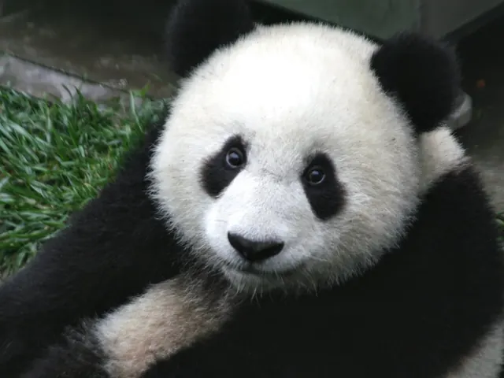
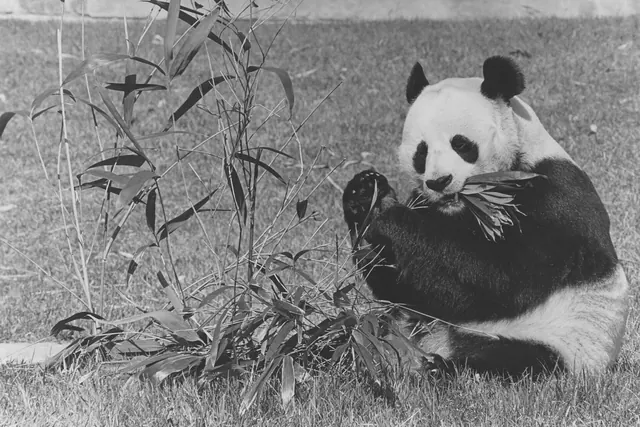
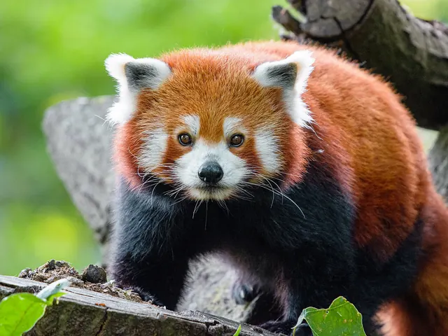
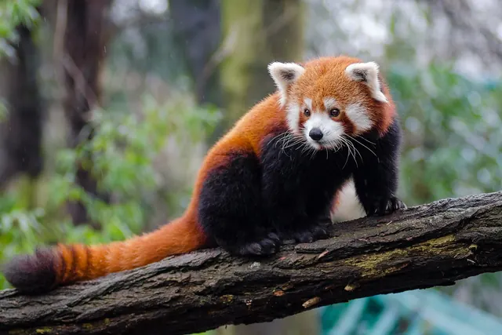
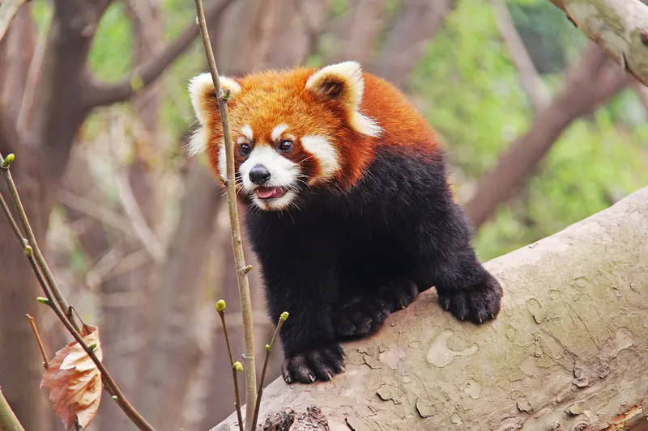
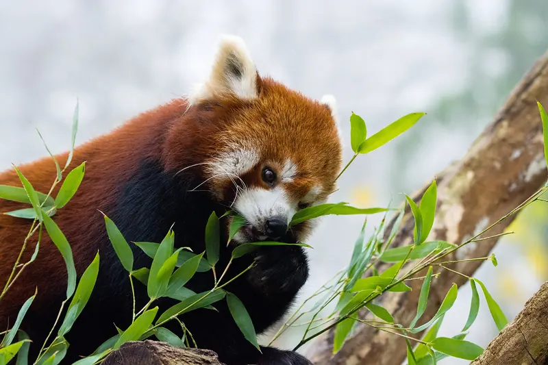
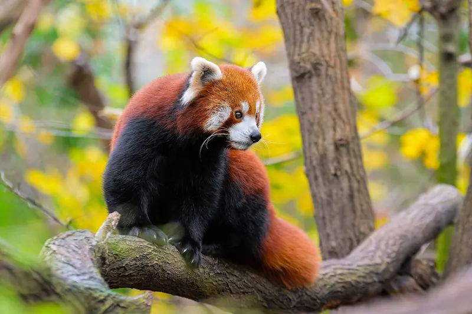
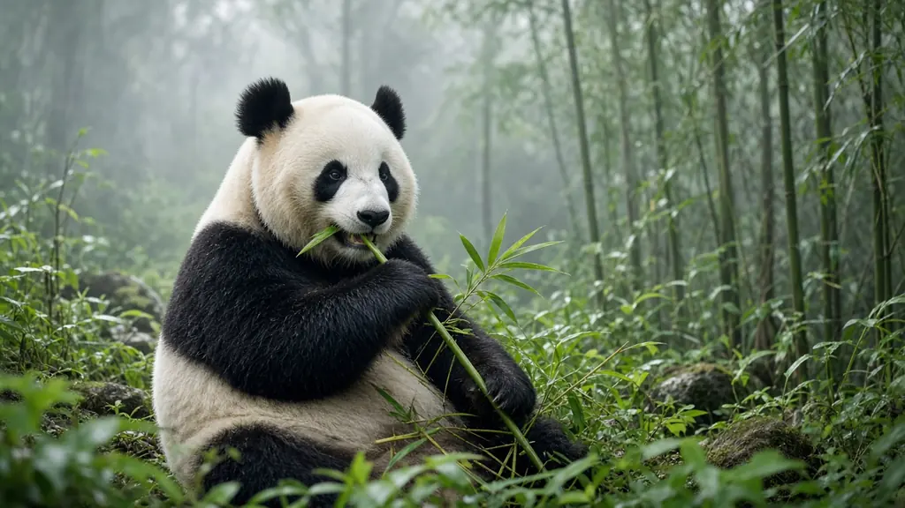
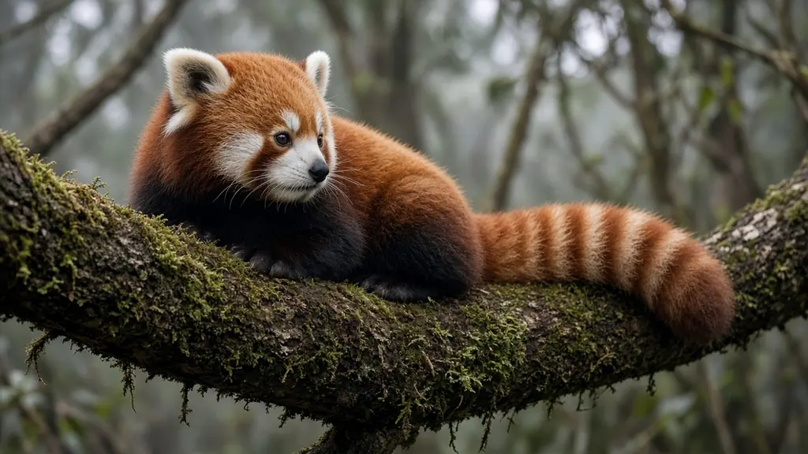

Photo credits
Every real photo on PandasWise comes from Wikimedia Commons under a free license: public domain, CC0, or CC BY SA with attribution. A small number of pictures are AI generated and are listed separately below. We checked the license on each file's own Commons page on 9 October 2026. Photos were resized and converted to WebP; no other changes were made. All text on this site is original.
| Photo | File | Source | Author | License |
|---|---|---|---|---|
 | giant-panda-cub-wolong.webp | Panda Cub from Wolong, Sichuan, China.JPG | Sheila Lau (Sheilalau at English Wikipedia) | Public domain |
 | giant-panda-young-wolong.webp | Giant Panda 2.JPG | Sheila Lau | Public domain |
 | giant-panda-mother-and-cub.webp | Panda Mom and cub play (25114209140).jpg | J. Young Photos | Public domain |
 | giant-panda-tian-tian.webp | Giant Panda 2004-03-2.jpg | Jeff Kubina | Public domain |
 | giant-panda-among-plants.webp | Grosser Panda.JPG | J. Patrick Fischer | CC BY SA 3.0 |
 | giant-panda-hsing-hsing-bamboo.webp | Photograph of Male Giant Panda, Hsing-Hsing, Eating Bamboo at the National Zoo - NARA - 36213489.jpg | Unknown author (US National Archives) | Public domain |
 | red-panda-on-log.webp | The red panda (Ailurus fulgens) 1.jpg | Mathias Appel | CC0 |
 | red-panda-face-branch.webp | Red Panda (31295139156).jpg | Mathias Appel | CC0 |
 | red-panda-eating-bamboo.webp | Red Panda Bamboo Dinner (26790302521).jpg | Mathias Appel | CC0 |
 | red-panda-on-branch.webp | Red Panda (24986761703).jpg | Mathias Appel | CC0 |
 | red-panda-chengdu-log.webp | Ailurus fulgens Chengdu 20140325.jpg | sharonang | CC0 |
 | red-panda-standing-portrait.webp | Red Panda (29633796272).jpg | Mathias Appel | CC0 |
 | red-panda-chewing-bamboo-leaves.webp | Red Panda (38253566354).jpg | Mathias Appel | CC0 |
 | red-panda-in-autumn-tree.webp | Red Panda - Flickr - Mathias Appel.jpg | Mathias Appel | CC0 |


.jpg){kind=link}


_1.jpg){kind=link}
.jpg){kind=link}
.jpg){kind=link}
.jpg){kind=link}

.jpg){kind=link}
.jpg){kind=link}

The CC BY SA 3.0 photo by J. Patrick Fischer is shared under the same license; its adapted WebP version is available under CC BY SA 3.0 too. If you believe a photo is credited wrongly, please contact us.
AI generated images
These pictures were made with an AI image generator to look like wildlife photographs of giant pandas and red pandas. They are not real photographs, they do not show real events or people, and each one is labelled AI generated in its caption. They were resized and converted to WebP. Generated 23 October 2026 for PandasWise.
| Picture | File | Subject | Used on | Type |
|---|---|---|---|---|
 | ai-giant-panda-bamboo-forest.webp | Giant panda in a misty bamboo forest | Homepage, habitat page | AI generated |
 | ai-red-panda-mossy-branch.webp | Red panda on a mossy branch | Homepage, red panda guide | AI generated |
 | ai-giant-panda-cub-tree.webp | Giant panda cub climbing a tree | Homepage, giant panda guide, baby panda article | AI generated |
 | ai-red-panda-winter-curled.webp | Red panda curled up on a snowy branch | Red panda warmth article, glossary | AI generated |
 | ai-giant-panda-eating-bamboo-closeup.webp | Giant panda eating a bamboo stalk | Giant panda guide, diet page, bamboo article | AI generated |
 | ai-red-panda-dusk.webp | Red panda at dusk | Homepage, nocturnal article | AI generated |